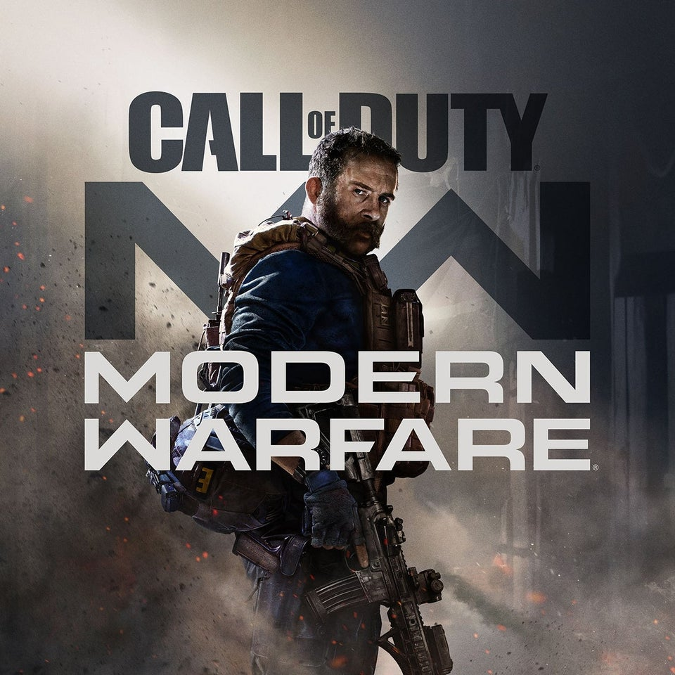
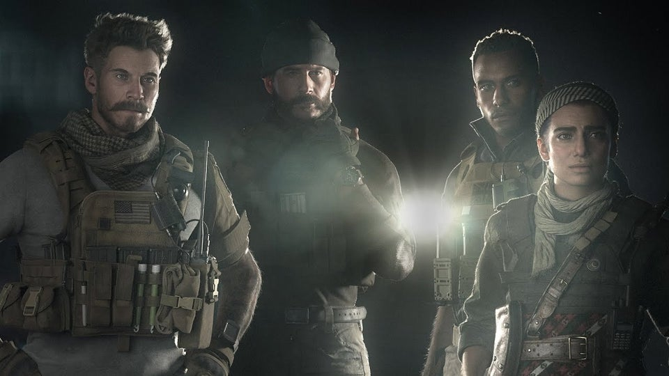

Call of Duty: Modern Warfare Wiki Guide

Welcome to IGN's Call of Duty: Modern Warfare Wiki Guide which covers everything from Tips,
Tricks, Weapon Strategies, Easter Eggs, How-To guides for using Blueprints, Killstreaks, 2XP
Tokens, and customizing operators, along with a complete walkthrough of the main campaign.
CoD MW released on October 25, 2019 and is available on PC, PlayStation 4, and Xbox One.
Prepare to go dark -- Modern Warfare is back! Developed by Infinity Ward, Call of Duty: Modern
Warfare puts you in the role of highly-skilled Tier One operators in an incredibly raw and gritty
narrative affecting the global balance of power. The new Modern Warfare delivers an emotionally
charged and intense campaign that shines a light on the changing nature of modern war.
Expect a single-player experience that is edgy, culturally relevant, and thought-provoking.
Players will fight alongside a diverse cast of international special forces and freedom fighters
working within the grey area of their rules of engagement, in a number of heart-pounding covert
operations set throughout iconic European cities and into the volatile expanses of the Middle East.
Missions include close-quarter, stealth operations and long-range combat that puts tactical
decision-making to the ultimate test.
Call of Duty: Modern Warfare Single-Player Campaign

The single-player mode in Call of Duty: Modern Warfare consists of 14 high-action missions, ranging
in setting. Below, you'll find a list of them all and their respective walkthroughs:
Beyond the gripping single-player campaign, expect a unified narrative experience and progression
across the entire game, including single-player campaign, online multiplayer, and co-op experiences.